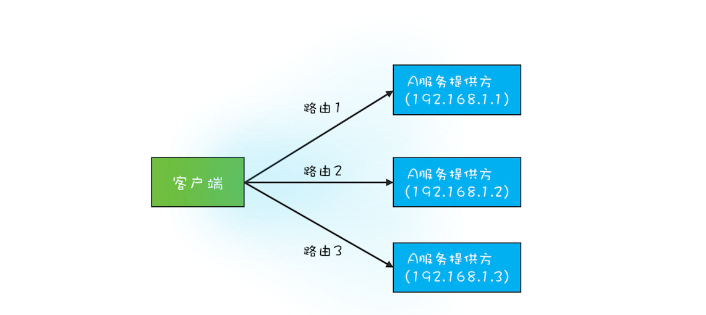
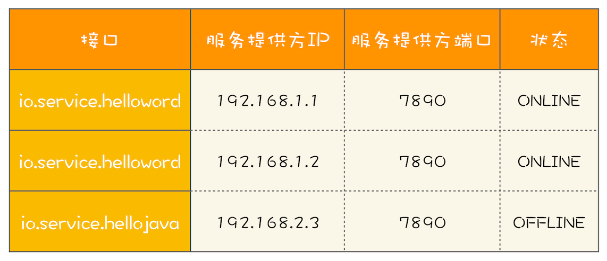

- 00 学习攻略 如何才能学好并发编程？.md
- 00 开篇词 你为什么需要学习并发编程？.md
- 01 可见性、原子性和有序性问题：并发编程Bug的源头.md
- 02 Java内存模型：看Java如何解决可见性和有序性问题.md
- 03 互斥锁（上）：解决原子性问题.md
- 04 互斥锁（下）：如何用一把锁保护多个资源？.md
- 05 一不小心就死锁了，怎么办？.md
- 06 用“等待-通知”机制优化循环等待.md
- 07 安全性、活跃性以及性能问题.md
- 08 管程：并发编程的万能钥匙.md
- 09 Java线程（上）：Java线程的生命周期.md
- 10 Java线程（中）：创建多少线程才是合适的？.md
- 11 Java线程（下）：为什么局部变量是线程安全的？.md
- 12 如何用面向对象思想写好并发程序？.md
- 13 理论基础模块热点问题答疑.md
- 14 Lock和Condition（上）：隐藏在并发包中的管程.md
- 15 Lock和Condition（下）：Dubbo如何用管程实现异步转同步？.md
- 16 Semaphore：如何快速实现一个限流器？.md
- 17 ReadWriteLock：如何快速实现一个完备的缓存？.md
- 18 StampedLock：有没有比读写锁更快的锁？.md
- 19 CountDownLatch和CyclicBarrier：如何让多线程步调一致？.md
- 20 并发容器：都有哪些“坑”需要我们填？.md
- 21 原子类：无锁工具类的典范.md
- 22 Executor与线程池：如何创建正确的线程池？.md
- 23 Future：如何用多线程实现最优的“烧水泡茶”程序？.md
- 24 CompletableFuture：异步编程没那么难.md
- 25 CompletionService：如何批量执行异步任务？.md
- 26 Fork_Join：单机版的MapReduce.md
- 27 并发工具类模块热点问题答疑.md
- 28 Immutability模式：如何利用不变性解决并发问题？.md
- 29 Copy-on-Write模式：不是延时策略的COW.md
- 3 个用户来信 打开一个新的并发世界.md
- 30 线程本地存储模式：没有共享，就没有伤害.md
- 31 Guarded Suspension模式：等待唤醒机制的规范实现.md
- 32 Balking模式：再谈线程安全的单例模式.md
- 33 Thread-Per-Message模式：最简单实用的分工方法.md
- 34 Worker Thread模式：如何避免重复创建线程？.md
- 35 两阶段终止模式：如何优雅地终止线程？.md
- 36 生产者-消费者模式：用流水线思想提高效率.md
- 37 设计模式模块热点问题答疑.md
- 38 案例分析（一）：高性能限流器Guava RateLimiter.md
- 39 案例分析（二）：高性能网络应用框架Netty.md
- 40 案例分析（三）：高性能队列Disruptor.md
- 41 案例分析（四）：高性能数据库连接池HiKariCP.md
- 42 Actor模型：面向对象原生的并发模型.md
- 43 软件事务内存：借鉴数据库的并发经验.md
- 44 协程：更轻量级的线程.md
- 45 CSP模型：Golang的主力队员.md
- 用户来信 真好，面试考到这些并发编程，我都答对了！.md
- 结束语 十年之后，初心依旧.md
29 Copy-on-Write模式：不是延时策略的COW
在上一篇文章中我们讲到Java里String这个类在实现replace()方法的时候，并没有更改原字符串里面value[]数组的内容，而是创建了一个新字符串，这种方法在解决不可变对象的修改问题时经常用到。如果你深入地思考这个方法，你会发现它本质上是一种Copy-on-Write方法。所谓Copy-on-Write，经常被缩写为COW或者CoW，顾名思义就是写时复制。
不可变对象的写操作往往都是使用Copy-on-Write方法解决的，当然Copy-on-Write的应用领域并不局限于Immutability模式。下面我们先简单介绍一下Copy-on-Write的应用领域，让你对它有个更全面的认识。
Copy-on-Write模式的应用领域
我们前面在《20 | 并发容器：都有哪些“坑”需要我们填？》中介绍过CopyOnWriteArrayList和CopyOnWriteArraySet这两个Copy-on-Write容器，它们背后的设计思想就是Copy-on-Write；通过Copy-on-Write这两个容器实现的读操作是无锁的，由于无锁，所以将读操作的性能发挥到了极致。
除了Java这个领域，Copy-on-Write在操作系统领域也有广泛的应用。
我第一次接触Copy-on-Write其实就是在操作系统领域。类Unix的操作系统中创建进程的API是fork()，传统的fork()函数会创建父进程的一个完整副本，例如父进程的地址空间现在用到了1G的内存，那么fork()子进程的时候要复制父进程整个进程的地址空间（占有1G内存）给子进程，这个过程是很耗时的。而Linux中的fork()函数就聪明得多了，fork()子进程的时候，并不复制整个进程的地址空间，而是让父子进程共享同一个地址空间；只用在父进程或者子进程需要写入的时候才会复制地址空间，从而使父子进程拥有各自的地址空间。
本质上来讲，父子进程的地址空间以及数据都是要隔离的，使用Copy-on-Write更多地体现的是一种延时策略，只有在真正需要复制的时候才复制，而不是提前复制好，同时Copy-on-Write还支持按需复制，所以Copy-on-Write在操作系统领域是能够提升性能的。相比较而言，Java提供的Copy-on-Write容器，由于在修改的同时会复制整个容器，所以在提升读操作性能的同时，是以内存复制为代价的。这里你会发现，同样是应用Copy-on-Write，不同的场景，对性能的影响是不同的。
在操作系统领域，除了创建进程用到了Copy-on-Write，很多文件系统也同样用到了，例如Btrfs (B-Tree File System)、aufs（advanced multi-layered unification filesystem）等。
除了上面我们说的Java领域、操作系统领域，很多其他领域也都能看到Copy-on-Write的身影：Docker容器镜像的设计是Copy-on-Write，甚至分布式源码管理系统Git背后的设计思想都有Copy-on-Write……
不过，Copy-on-Write最大的应用领域还是在函数式编程领域。函数式编程的基础是不可变性（Immutability），所以函数式编程里面所有的修改操作都需要Copy-on-Write来解决。你或许会有疑问，“所有数据的修改都需要复制一份，性能是不是会成为瓶颈呢？”你的担忧是有道理的，之所以函数式编程早年间没有兴起，性能绝对拖了后腿。但是随着硬件性能的提升，性能问题已经慢慢变得可以接受了。而且，Copy-on-Write也远不像Java里的CopyOnWriteArrayList那样笨：整个数组都复制一遍。Copy-on-Write也是可以按需复制的，如果你感兴趣可以参考Purely Functional Data Structures这本书，里面描述了各种具备不变性的数据结构的实现。
CopyOnWriteArrayList和CopyOnWriteArraySet这两个Copy-on-Write容器在修改的时候会复制整个数组，所以如果容器经常被修改或者这个数组本身就非常大的时候，是不建议使用的。反之，如果是修改非常少、数组数量也不大，并且对读性能要求苛刻的场景，使用Copy-on-Write容器效果就非常好了。下面我们结合一个真实的案例来讲解一下。
一个真实案例
我曾经写过一个RPC框架，有点类似Dubbo，服务提供方是多实例分布式部署的，所以服务的客户端在调用RPC的时候，会选定一个服务实例来调用，这个选定的过程本质上就是在做负载均衡，而做负载均衡的前提是客户端要有全部的路由信息。例如在下图中，A服务的提供方有3个实例，分别是192.168.1.1、192.168.1.2和192.168.1.3，客户端在调用目标服务A前，首先需要做的是负载均衡，也就是从这3个实例中选出1个来，然后再通过RPC把请求发送选中的目标实例。

RPC路由关系图
RPC框架的一个核心任务就是维护服务的路由关系，我们可以把服务的路由关系简化成下图所示的路由表。当服务提供方上线或者下线的时候，就需要更新客户端的这张路由表。

我们首先来分析一下如何用程序来实现。每次RPC调用都需要通过负载均衡器来计算目标服务的IP和端口号，而负载均衡器需要通过路由表获取接口的所有路由信息，也就是说，每次RPC调用都需要访问路由表，所以访问路由表这个操作的性能要求是很高的。不过路由表对数据的一致性要求并不高，一个服务提供方从上线到反馈到客户端的路由表里，即便有5秒钟，很多时候也都是能接受的（5秒钟，对于以纳秒作为时钟周期的CPU来说，那何止是一万年，所以路由表对一致性的要求并不高）。而且路由表是典型的读多写少类问题，写操作的量相比于读操作，可谓是沧海一粟，少得可怜。
通过以上分析，你会发现一些关键词：对读的性能要求很高，读多写少，弱一致性。它们综合在一起，你会想到什么呢？CopyOnWriteArrayList和CopyOnWriteArraySet天生就适用这种场景啊。所以下面的示例代码中，RouteTable这个类内部我们通过ConcurrentHashMap<String, CopyOnWriteArraySet<Router>>这个数据结构来描述路由表，ConcurrentHashMap的Key是接口名，Value是路由集合，这个路由集合我们用是CopyOnWriteArraySet。
下面我们再来思考Router该如何设计，服务提供方的每一次上线、下线都会更新路由信息，这时候你有两种选择。一种是通过更新Router的一个状态位来标识，如果这样做，那么所有访问该状态位的地方都需要同步访问，这样很影响性能。另外一种就是采用Immutability模式，每次上线、下线都创建新的Router对象或者删除对应的Router对象。由于上线、下线的频率很低，所以后者是最好的选择。
Router的实现代码如下所示，是一种典型Immutability模式的实现，需要你注意的是我们重写了equals方法，这样CopyOnWriteArraySet的add()和remove()方法才能正常工作。
//路由信息
public final class Router{
private final String ip;
private final Integer port;
private final String iface;
//构造函数
public Router(String ip,
Integer port, String iface){
this.ip = ip;
this.port = port;
this.iface = iface;
}
//重写equals方法
public boolean equals(Object obj){
if (obj instanceof Router) {
Router r = (Router)obj;
return iface.equals(r.iface) &&
ip.equals(r.ip) &&
port.equals(r.port);
}
return false;
}
public int hashCode() {
//省略hashCode相关代码
}
}
//路由表信息
public class RouterTable {
//Key:接口名
//Value:路由集合
ConcurrentHashMap<String, CopyOnWriteArraySet<Router>>
rt = new ConcurrentHashMap<>();
//根据接口名获取路由表
public Set<Router> get(String iface){
return rt.get(iface);
}
//删除路由
public void remove(Router router) {
Set<Router> set=rt.get(router.iface);
if (set != null) {
set.remove(router);
}
}
//增加路由
public void add(Router router) {
Set<Router> set = rt.computeIfAbsent(
route.iface, r ->
new CopyOnWriteArraySet<>());
set.add(router);
}
}
总结
目前Copy-on-Write在Java并发编程领域知名度不是很高，很多人都在无意中把它忽视了，但其实Copy-on-Write才是最简单的并发解决方案。它是如此简单，以至于Java中的基本数据类型String、Integer、Long等都是基于Copy-on-Write方案实现的。
Copy-on-Write是一项非常通用的技术方案，在很多领域都有着广泛的应用。不过，它也有缺点的，那就是消耗内存，每次修改都需要复制一个新的对象出来，好在随着自动垃圾回收（GC）算法的成熟以及硬件的发展，这种内存消耗已经渐渐可以接受了。所以在实际工作中，如果写操作非常少，那你就可以尝试用一下Copy-on-Write，效果还是不错的。
课后思考
Java提供了CopyOnWriteArrayList，为什么没有提供CopyOnWriteLinkedList呢？
欢迎在留言区与我分享你的想法，也欢迎你在留言区记录你的思考过程。感谢阅读，如果你觉得这篇文章对你有帮助的话，也欢迎把它分享给更多的朋友。
© 2019 - 2023 Liangliang Lee. Powered by gin and hexo-theme-book.